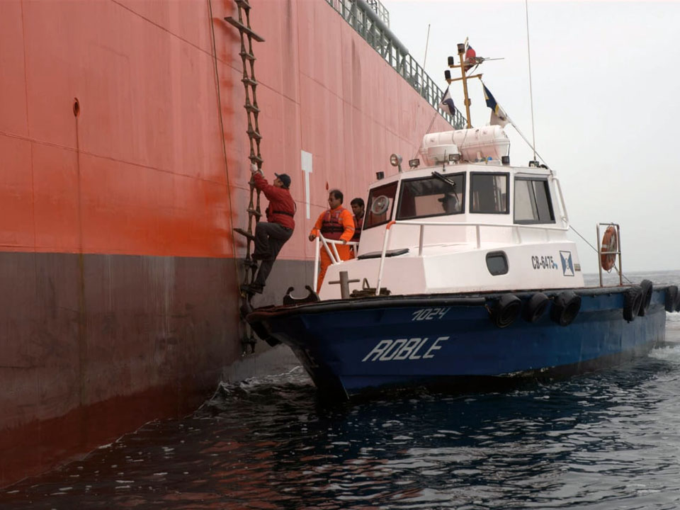

Practicaje, pilotaje, baquía: una reforma que exige revisión técnica antes que ideológica
El Decreto 690/2026, publicado el 31 de julio en el Boletín Oficial, deroga el Decreto 2694/91 —marco vigente durante treinta y cuatro años— e introduce la reforma más profunda al régimen de practicaje, pilotaje y baquía en la Argentina moderna.
Entre sus disposiciones estructurales se destacan la apertura sin cupos del registro de prácticos habilitados ante la Prefectura Naval Argentina (PNA), contratación de prácticos como profesionales independientes, tarifas máximas fijadas por la Agencia Nacional de Puertos y Navegación (ANPYN) para la totalidad del servicio —incluidas maniobras de atraque, desatraque y fondeo—, desregulación de los medios de transporte de prácticos. Y la disposición que concentra el mayor volumen de objeciones técnicas: la posibilidad de que capitanes o patrones, nacionales o extranjeros, obtengan un certificado de conocimiento de zona acreditando en unos pocos viajes y prescindan así de la contratación obligatoria de práctico o baqueano.
Como entidad que sigue de cerca la actividad portuaria, marítima y fluviolacustre del país, la Fundación Mundo Puerto considera necesario fijar posición sobre una reforma de esta magnitud, con el rigor técnico que el tema exige, sin caer en la lógica de bandos que domina buena parte del debate público y sin perder de vista que, este asunto en particular, tiene que analizarse de una manera sistémica e integrada a la Marina Mercante.
El practicaje como gestión de riesgo, no como trámite administrativo
La navegación comercial moderna ha evolucionado durante décadas bajo un principio que nunca debería ser objeto de experimentación: la seguridad operacional. Ésta constituye un valor superior frente a cualquier intención de reducción de costos o simplificación administrativa. Ese concepto atraviesa toda la normativa internacional, desde el Convenio SOLAS o la propia Resolución A960(23) de la Organización Marítima Internacional hasta el Código Internacional de Gestión de la Seguridad (ISM Code), así como el Régimen de la Navegación Marítima, fluvial y Lacustre que forman parte de la cultura profesional de quienes han pasado su vida a bordo.
El servicio de practicaje —y sus variantes de pilotaje marítimo y baquía fluvial— no es un requisito burocrático adosado a la operación portuaria: es un dispositivo de gestión de riesgo operacional en tramos de navegación donde la maniobrabilidad del buque, la restricción de las aguas y el factor humano interactúan de forma crítica.
En la Vía Navegable Troncal (VNT) Paraná–de la Plata, esto se traduce en una serie de factores como canales de ancho variable, corrientes cruzadas, calados ajustados al margen de la revancha bajo quilla disponible, tráfico mixto de buques de ultramar y convoyes de empuje de barcazas, y una dinámica de sedimentación constante que exige actualización permanente del conocimiento de zona más allá de lo que certifica cualquier carta náutica o sistema ECDIS.
Ese conocimiento focalizado —variaciones del canal navegable, comportamiento estacional de la corriente, puntos de maniobra crítica, protocolos de comunicación con practicaje y VTS locales, etc.— es precisamente lo que distingue al práctico o baqueano con conocimiento de zona de un capitán con experiencia general en navegación oceánica.
La práctica internacional en materia de seguridad de la navegación para aguas restringidas reconoce esta distinción: la mayoría de las administraciones marítimas mantienen esquemas de practicaje obligatorio o, cuando admiten certificados de exención, los sujetan a estándares de acreditación exigentes, revalidación periódica y evaluación práctica y presencial en la zona específica, y no a un mínimo de viajes verificado administrativamente en una libreta.
El práctico —entonces— no es un simple asesor administrativo del capitán. Es el profesional que incorpora al puente el conocimiento empírico acumulado de una determinada derrota, actualizado diariamente mediante la experiencia directa sobre el terreno. Ese conocimiento y la velocidad de su actualización y recálculo no pueden reemplazarse de manera sencilla con tecnología, sistemas electrónicos de navegación o experiencia oceánica.
Eficiencia económica y seguridad operacional
El Decreto 690/2026 modifica aspectos centrales del sistema vigente con el objetivo declarado de aumentar la competencia, flexibilizar las condiciones de prestación del servicio y reducir costos logísticos. Desde una perspectiva económica esos objetivos pueden resultar legítimos. Sin embargo, el problema aparece cuando la eficiencia económica comienza a desplazar a la seguridad operacional como criterio rector del sistema.
En este contexto, la norma introduce una lógica regulatoria que, desde el punto de vista de la seguridad de la navegación, resulta —como mínimo— preocupante. En materia marítima existe un principio universal: los accidentes graves rara vez obedecen a una única causa. Generalmente son consecuencia de la acumulación de pequeñas degradaciones en las barreras de seguridad.
La seguridad de la navegación no puede basar su análisis únicamente en el costo del practicaje u otros. Debe medirse frente al costo potencial de un accidente mayor como así también frente al costo de una congestión de tráfico con sus consecuentes demoras. Y muchísimo menos si está en juego la vida humana en el mar.
Una varadura en el Paraná / de la Plata, la colisión de un buque tanque, el cierre prolongado de un canal de acceso o un derrame de hidrocarburos poseen consecuencias humanas, ambientales y económicas infinitamente superiores a cualquier ahorro obtenido mediante la flexibilización regulatoria. En la ingeniería del riesgo ese razonamiento resulta elemental. En el Decreto 690/2026 se omite.
Lo que preocupa no es la actualización del marco, sino su método
Ninguna organización seria puede sostener que un régimen de treinta y cuatro años no admita revisión. Existen cuestionamientos sobre el régimen actual que parten de los mismos actores del sistema y que merecían y merecen discusión. El objetivo declarado de reducir costos logísticos y ampliar la competencia es, en sí mismo, legítimo.
Lo que genera inquietud desde una mirada profesional en este estadío es, en principio, el método: no se conocen estudios técnicos públicos —de accidentabilidad, de incidencia real del practicaje en el costo logístico total, de experiencia comparada— que sustenten el diseño específico de la reforma.
Tampoco existió, previo a la publicación del decreto, una instancia formal de consulta a las cámaras de profesionales, las autoridades portuarias, los operadores de terminales y los organismos técnicos del sector, pese a que la norma modifica de manera directa la operación cotidiana de prácticamente todos los puertos de la República.
Posición institucional
La Fundación Mundo Puerto valora los objetivos de eficiencia, publicidad tarifaria y apertura de mercado que persigue el Decreto 690/2026, pero sostiene que, en su diseño actual, la norma debilita una función de seguridad de la navegación sin haber demostrado con evidencia técnica pública que el nuevo esquema preserve el mismo estándar de resguardo operacional que el régimen anterior.
La discusión de fondo no es entre regulación y desregulación en abstracto, sino entre qué funciones de un sistema portuario y fluvial pueden someterse a lógica de mercado y cuáles cumplen un rol de control y gestión de riesgo que exige criterios técnicos específicos, actualizables y humanos, ajenos a la sola variable de costo.
La judicialización del acto de gobierno inconsulto y las medidas de fuerza que paralizaron el ingreso de buques a terminales de todo el País en días pasados no constituyen, para esta Fundación, un resultado deseable ni para el sector profesional ni para la cadena exportadora ni para la actividad portuaria en su conjunto. Son sólo la consecuencia previsible y evitable de una reforma que se implementó con celeridad administrativa pero sin la maduración técnica que un cambio de esta naturaleza requiere.
Por ello, el acuerdo arribado en horas de la tarde del día de ayer (04/08/2026) nos da esperanzas de que exista margen para corregir el rumbo y plantear objetivos comunes a todas las partes involucradas. En ese afán, bregamos por:
- La conformación de una mesa técnica permanente que incluya —como mínimo— a la ANPYN, ARA, PNA, JST, a las cámaras de prácticos, portuarias y armadoras, y representantes académicos del sector náutico.
- La publicación de indicadores de seguridad de la navegación —accidentes, incidentes, varaduras—, como condición para evaluar las necesidades de cambio y las soluciones propuestas.
- La revisión del umbral y las condiciones del certificado de conocimiento de zona a la luz de estándares internacionales de acreditación de exención de practicaje, en particular en tramos de alta complejidad como los de la VNT.
- La implementación gradual de los acuerdos a los que se arribe, evitando que la transición se resuelva bajo presión de conflicto en lugar de bajo planificación operativa.
Esa discusión debe contemplar todos los aspectos de nuestro quehacer: el régimen de formación de los profesionales del transporte por agua, regímenes de trabajo, regulación del cabotaje, costos de los fletes, segundos registros… y una larga lista de etcéteras de temas pendientes de consensos.
Desde la Fundación Mundo Puerto continuaremos el seguimiento de este proceso con el mismo criterio que aplicamos a cada tema de la agenda portuaria y náutica: informar con rigor técnico, promover y mediar en el diálogo entre los actores del sistema y bregar por una política fluvio-marítima argentina a la altura de la relevancia estratégica que el transporte por agua tiene para su comercio exterior y para el desarrollo del País.
*Agradecemos la confianza depositada en nosotros por aquellas Instituciones con las que tomamos contacto durante el día de ayer, así como la honestidad intelectual con la que hemos podido intercambiar opiniones.